Control what they access. Limit what they spend. Stop them instantly.
Altrace is a transparent proxy that sits between your AI agents and LLM providers. Kill switches, budget limits, prompt injection detection, and audit trails — enforced at the network layer. Agents cannot bypass it.

Without Governance
An agent loops. Your LLM bill spikes. No circuit breaker exists. Altrace caps spending before the call leaves your network.
An attacker manipulates your agent through its inputs. It leaks data, calls unauthorized tools, or ignores its instructions. Altrace detects and blocks this in real time.
Something goes wrong and you can't stop it. Altrace gives you a single API call to halt any agent, any team, or everything — instantly.
The Problem
Instructions to the model, not enforcement. A jailbroken, confused, or creatively autonomous agent ignores them. They're suggestions — not controls.
Doesn't scale. If you're running 50 agents making hundreds of LLM calls per hour, a human in the loop becomes a human in the way.
Wait until a breach, a compliance finding, or a runaway agent makes the decision for you. By then, the damage is done.
There's a fourth option.
Platform
Three-scope hierarchy: global, team, and individual agent. SQLite WAL persistence across restarts. New requests blocked in <1ms, active tunnels terminated within 1.2 seconds.
Learn more →Pre-request cost estimation with atomic budget checks. TOCTOU pre-reservation bounds overrun to ~$0.60 worst-case. Per-team and per-agent limits with graduated escalation.
Learn more →Every request evaluated against 25 governance stages: delegation, manifest, model filter, MCP registry, tool permissions, evidence grounding, OPA, Cedar, and more.
Learn more →PII detection with RE2 regex patterns. Real-time SSE stream scanning with sliding window reassembly. Mid-flight stream cancellation on policy violation. Content-blind: labels only, never extraction.
Learn more →Server registry authorization, tool fingerprint verification, supply chain attestation, description poisoning detection (53 RE2 patterns), per-tool cost caps, and team-scoped access control.
Learn more →Destructive tool calls blocked without prerequisite evidence-gathering calls. Time-bounded, session-scoped evidence with provider-native self-repair feedback for LLM self-correction.
Learn more →Product
In Kubernetes deployments, one API call blocks all new LLM requests for a team or individual agent. The kill switch is enforced at the network layer — the agent process has no route to bypass it. Kill state persists through restarts and power loss.
When an orchestrator delegates to a worker agent, Altrace enforces that the worker's authority is a strict subset of what it was granted. Budget, model access, tool permissions, data classification — all attenuated through delegation contracts. This is mathematically enforced, not policy-enforced.
Altrace records every governance decision in a tamper-evident audit log. Request ID, agent identity, which stage in the decision chain produced the result, and the machine-readable reason code. When an auditor asks what happened, you have the answer — with causal context, not just timestamps.
Operator Control
Altrace fires a structured alert to Slack with full context — agent ID, violation reason, affected budget, and a one-click kill switch. No log diving. No incident post-mortem at 2am.
Compliance
12 of 14 controls enforced at the infrastructure layer across 5 governance domains
Art. 9, 14, 50 — human oversight, risk management, and transparency enforcement
Tamper-evident audit logs with hash-chain integrity for continuous compliance evidence
Content-blind governance — your data never leaves your infrastructure
Trust
Altrace runs entirely within your infrastructure. No external API calls, no telemetry, no data exfiltration. Verify it yourself.
Request early access or try the Docker sandbox in 2 minutes.
We respond within 24 hours. Or try the sandbox now.